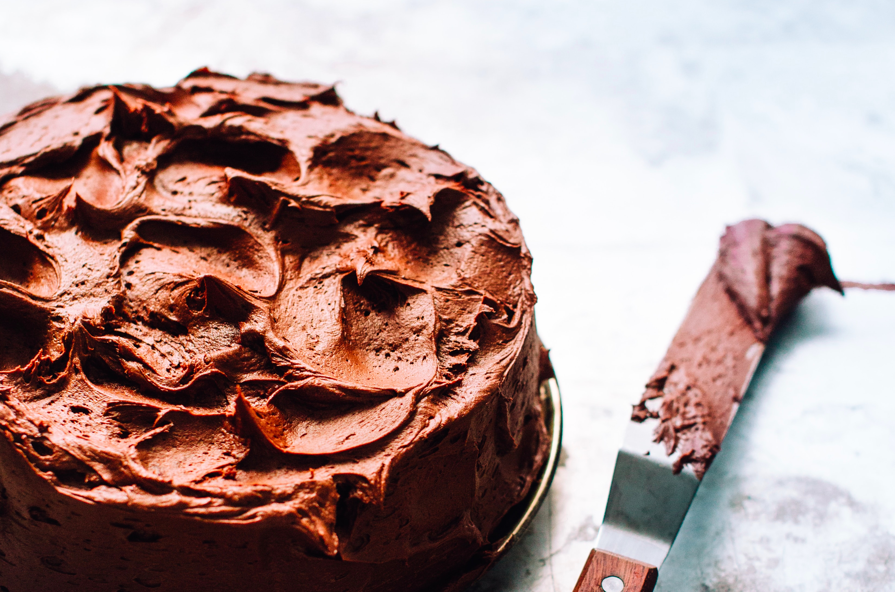
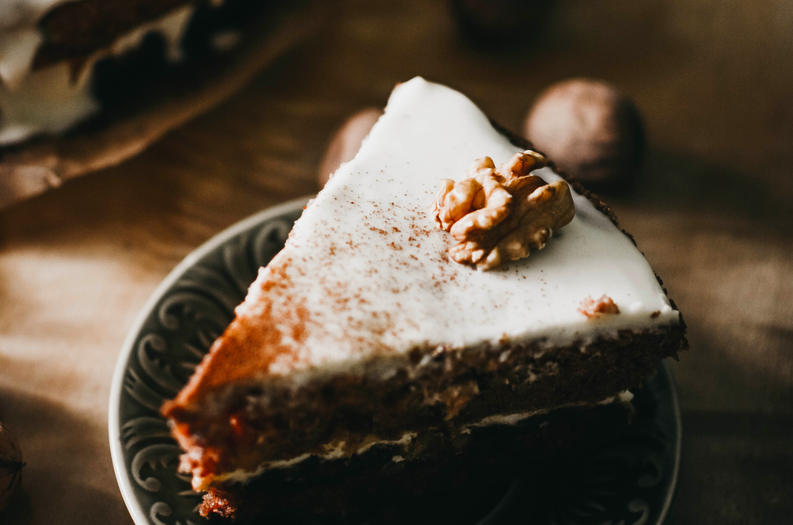

Chocolate Mint Cake
Serves 12 | Prep time 35 minutes (plus chilling) | Cook time 25 minutes

Ingredients
Cake
1¾ cups (215g, 7oz) plain flour
¾ tsp baking soda
½ tsp salt
110g (4oz) butter
1¾ cups (285g, 14oz) sugar
3 eggs
115g (4oz) chocolate, melted
1 tsp vanilla extract
¾ cup (185ml, 6fl oz) milk
½ cup (125ml, 4fl oz) water
Filling
1 cup (250ml, 8fl oz) thickened cream
3 tsps icing sugar
½ tsp peppermint extract
Icing
1 cup (170g, 6oz) chocolate chips
55g (2oz) butter
⅓ cup (80ml, 3fl oz) evaporated milk
1 tsp vanilla extract
1½ cups (235g, 8oz) icing sugar
mint, to garnish
Method
- To make the cake, preheat the oven to 180oC (350oF, Gas Mark 4). Grease two 23cm (9 inch) round cake tins and line with greaseproof paper. You can do this by rubbing the sides in vegetable oil or butter with a paper towel or a pastry brush.
- In a bowl, sift together the flour, baking soda and salt in a large mesh sieve. This adds air to the cake that will make it light and airy.
- In a large separate bowl or electric mixer, cream the butter and sugar until the colour is pale yellow and the texture is fluffy. Add the eggs one at a time, beating the mixture after each egg is added.
- In another bowl, combine the chocolate and vanilla. Add half of the chocolate to the butter mixture. To the other half, add the milk and water. Once they are combined, add to the butter mixture. Beat well.
- Add the flour mixture to the butter mixture and fold them until well combined. You can do this with a wooden or rubber spatula by cutting through the mixture several times. Then scrape the bottom of the bowl and 'flip over' the mixture and repeat.
- Divide the batter between the prepared cake tins and tap the tins on a flat surface several times to get rid of air bubbles. Bake the cakes for 20 minutes or until a skewer comes out clean when inserted. Leave the cakes to cool slightly before removing them from the tins and cool completely on wire racks. Once completely cool, the greaseproof paper can be removed.
- The filling can be made while the cake is baking. Beat the cream in a bowl until it begins to thicken to the consistency of yoghurt. Add the icing sugar and peppermint extract and beat the mixture again until stiff peaks form.
- To make the icing, melt the chocolate chips and butter in a microwave in short bursts of 20 seconds, or in a small saucepan over a low heat until it is smooth. Cool the chocolate before beating in the evaporated milk and vanilla extract. Add in the icing sugar slowly and beat until smooth.
- Assemble the cake by placing one of the cakes on a serving plate. Spread the filling over the top and put the second cake on top. Then spread the icing on top of the cake and chill for 1-2 hours. Garnish with mint to serve.
Coffee & Walnut Cake
|
Vanilla Cupcakes
|
Back to Top
Coffee & Walnut Cake
Serves 8-10 | Prep time 25 minutes | Cook time 25 minutes (plus cooling)

Ingredients
Cake
50g (2oz) chopped walnut pieces
1 cup (220g, 8oz) caster sugar
225g (8oz) butter
1¾ cups (215g, 7oz) plain flour
4 tsp instant coffee
2½ tsp baking powder
½ tsp baking soda
4 eggs
1-2 tbsp milk
Filling
2 cups (310g, 10oz) icing sugar
175g (6oz) butter
2 tsp instant coffee, dissolved in 1 tbsp boiling water
walnut halves, to decorate
Method
- To make the cake, preheat the oven to 180oC (350oF, Gas Mark 4). Grease two 20cm (8 inch) round cake tins and line with greaseproof paper. You can do this by rubbing the sides in vegetable oil or butter with a paper towel or a pastry brush.
- In a large bowl, add all the cake ingredients except for the milk and beat to form a smooth batter. Gradually add the milk until it reaches the consistency where it drops off a spoon but not runny enough to run down the spoon.
- Divide the batter between the prepared cake tins and tap the tins on a flat surface several times to get rid of air bubbles. Bake the cakes for 25 minutes or until they spring up when pressed lightly. Leave the cakes to cool slightly before removing them from the tins and cool completely on wire racks. Once completely cool, the greaseproof paper can be removed.
- To make the icing, add the butter and sift the icing sugar into it. Beat until a smooth icing forms. Then add the hot coffee and mix until well combined.
- Assemble the cake by placing one of the cakes on a serving plate. Spread the filling over the top and put the second cake on top. Then spread the icing on top of the cake and smooth it out with a spatula. Decorate with the walnut halves and serve.
Chocolate Mint Cake
|
Vanilla Cupcakes
|
Back to Top
Vanilla Cupcakes
Serves 24 | Prep time 20 minutes | Cook time 25 minutes

Ingredients
Cupcakes
150g (5oz) butter
1½ cups (330g, 12oz) caster sugar
2 eggs
2½ cups (310g, 10oz) self-raising flour
1¼ cups (310ml, 10fl oz) milk
2 tsp vanilla essence
Icing
100g (3½ oz) butter
1½ cups (235g, 8oz) icing sugar
2 drops vanilla essence
2 tbsp milk
Method
- To make the cupcakes, preheat the oven to 190oC (375oF, Gas Mark 5). Line a muffin tray with cupcake cases, these trays can be as big or small as you want. A bigger muffin mould requires a longer baking time while a smaller mould will require less.
- In a bowl or electric mixer, cream the butter and sugar until the colour is pale yellow and the texture is fluffy. Add the eggs one at a time, beating the mixture after each egg is added.
- Sift the flour into the mixture with a large mesh sieve, then add the milk and vanilla essence and beat until the batter is smooth. Spoon the batter into the cupcake cases and fill them up a third of the way. This is important because the cupcakes expand during baking and they will expand too much if the cases are overfilled.
- Bake the cupcakes for 20 minutes or until golden brown and spring up when pressed lightly. Remove them to cool completely on wire racks.
- To make the icing, cream the butter and sugar until it is light and fluffy. Sift the icing sugar into the mixture, then add the milk and vanilla essence. Beat until combined. For a thicker consistency, add more icing sugar. For a thinner consistency, add extra milk.
- Spread or pipe the icing onto the cupcakes and serve.
Chocolate Mint Cake
|
Coffee & Walnut Cake
|
Back to Top